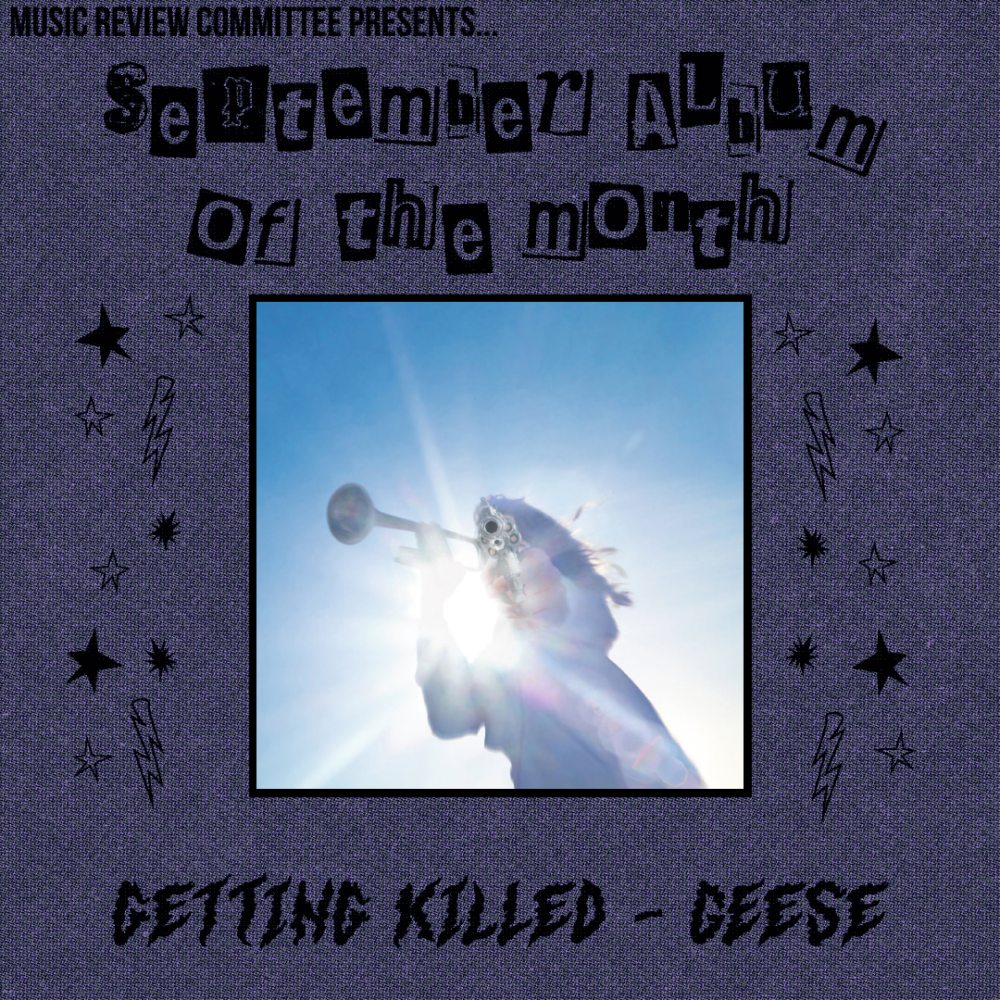

since 1949
Getting Killed by Geese – Review
Music · Ryan Watson and Julien Michalski · 13 Nov 2025

Written by Ryan Watson and Julien Michalski
“Getting Killed” is the newest album from Brooklyn alt-rock darlings Geese. Since they’re last album 3D-Country, Geese has been put at the forefront of the underground rock scene in New York, and it is well deserved. Even beyond frontman Cameron Winter’s insane vocal performances the band has gained a reputation of being one of the wackiest and wildest bands out and they live up to all of it on “Getting Killed”. Following Winter’s solo release, “Heavy Metal”, the whole band has picked up on his loose and free style of writing music which has led each song to feel so unique and almost self contained as a result. Due to every song feeling like it’s its own world I feel it’s best to go about this album track by track.
The album opens with probably the most intense song in the tracklist, “Trinidad”. The song has relatively minimalist and spaced out production that creates a very uneasy and tense atmosphere complemented by Cameron winter exhaustedly crooning over it. The song absolutely explodes entering the chorus with Winter screaming “THERE’S A BOMB IN MY CAR”. The already off kilter instrumental becomes even more insane This insanity progresses through each chorus until after the final verse where Winter(or the character he’s portraying) reaches their wits end and drives through a red light with a bomb in their car. With a more cursory look, Winter’s ludicrous subject matter ends up being a metaphor for escapism and wanting to be freed from the horrors and tiring monotony of modern everyday life which, as you will see, is a recurring theme throughout the album.
The following song,”Cobra”, takes a much different turn. The instrumental is comparatively much softer and the song overall is very light, fun, and sweet and makes you want to do a little jig. The percussion on the song adds a really nice texture especially the cabasa which adds to the cuteness and jubilance. The jangly guitar really creates the lightness of the song along with the funky bassline that Dominic DiGesu lays down over it making a dancey atmosphere across the track. When it comes to Winter’s vocals on “Cobra”, they actually come off as somewhat approachable for those unfamiliar with his typical tone. Behind the light instrumental The lyrics of the song see winter going back and forth on a presumed lover of his. He wants them to be with him and wants to fall into the enticement she;s offering while also thinking she should be ashamed of what she’s doing. He wants her to leave her current situation for him but also thinks that it’s shameful of her and thinks he’s holier than thou for resisting. The song overall is very beautiful and is probably the happiest the album gets in terms of tone and Cameron’s general well being
Husbands falls next in the tracklist and is, once again, a complete tone shift. The beat is unsettling at first attempts to make the listener a bit uncomfortable which in turn somewhat prepares them for the topic at hand. For once Cameron is talking about a topic that is, to my knowledge, somewhat extraneous to him; tradwife culture. In the verses, he sings from the perspective of a housewife talking about her traditional relationship. He compares it to a horse on her back and says how much it weighs her down, but in turn it provides her everything she needs and provides her company curing her of her loneliness. On the chorus, Winter criticizes this lifestyle by confronting these “tradwives” on the reality of their situation. When their husbands die they’ll be left with nothing and they’ll fall apart in turn. Going back to the sound of the song, it slowly crescendo’s throughout the track and reaches a climax before promptly dropping out and returning to the place we started at and coming full circle in a way.When it comes to Cameron, he has a very interesting vocal performance across the track which adds to the uncomfortable and un easy atmosphere. It both complements and contrasts the song by being much more out there which gives Cameron a lot of time to shine on the track. “Husbands” ended up being one of my favorites on the album with the writing being the cherry on top and showing how far Winter has come as a writer following his solo album.
The title track, “Getting Killed”, wastes no time getting started. Upon pressing play you’re immediately hit with Mac Bassin going wild on the drums and Emily Green’s classic bluesy, heavy guitar work accompanied by whirling percussion and chopped up soul samples in the background. The aggressive intro shortly drops out to let Winter take center stage for a little bit. Behind him are soft guitars and funky percussion to keep the energy going before eventually kicking back into gear, this time with Winter wailing overtop. The song later slows down a bit giving Cameron more time to shine but still keeps the vibrant percussion, albeit at a bit of a calmer pace, and stays in that realm to finish out the track. The lyrics of the song hearken back to the themes on the opener of the album with Winter talking about how suffocated he feels in life and how he’s getting killed by it. The song is pretty fitting as the title track as it adds the most to the overarching themes of being tired with your current life and wanting to escape from it.
“Islands of Men” is the second longest song on the album and has some of the most interesting themes as well. The song talks about the current “male loneliness epidemic” and the prevalence and rise of “incels”. Winter portrays these incels as being on their own islands and isolating themselves from the world and running away from the truth of their current existence. Throughout the song Winter is basically pleading with these men to acknowledge the problems they are facing and stop living in this fantasy hellhole. He also tells them to go talk to women which is pretty funny. He says it in a more poetic way but it’s still one of my favorite parts of the album. “Islands of Men” was the first song written for the album and that shows somewhat in the subject matter being a bit disconnected from the rest of the album but is still loosely related in the way that it’s talking about issues faced living in the modern day. This isn’t a problem as the song still fits perfectly within the tracklist in terms of its tone and sound which is arguably more important than the subject matter. I saw this song live mid-2024 and I’ve been anticipating it’s release ever since so finally hearing its studio version has been a long awaited treat and it ends up being one of my favorites on the album.
“100 Horses” was the third and final single for the album and it’s pretty clear why. The song is very energetic and immediate with its bluesy, funky, wartime instrumental and it’s a pretty easy song to get into. The only thing that’s a little off about the song is it’s structure is pretty loose with it having no real hook or chorus but, in my opinion, it works in its favor. The themes of the song handle the tendency of people to turn a blind eye to the real horrors of the world. Winter outlines these themes pretty clearly with lines like “All people must smile in times of war” and “There is only dance music in times of war”. He contrasts this with lessons he was taught by General Adams and General Smith who seem to reveal to Cameron the true reality and true horrors of the world that everyone else chose to ignore. The song overall is a very fun listen and when it came out it served as an exciting teaser for the rest of the album to come.
The album reaches its most tender moments on the next two tracks, the first of which is “Half Real”. “Half Real” is the song most influenced by Winters solo work on the album as both the writing and song structure are extremely loose and spiraling. The twinkling guitar and percussion create a serene and almost saccharine environment for Winter’s somewhat sad lyricism. Throughout the song, Winter rambles on about a past relationship whose validity has come into question with the person Winter is talking to claiming that the love “was only half real” and that because the relationship didn’t work out that Cameron didn’t truly love the other person which, as stated by Cameron himself, is only half true. It was so real in fact that the memories are always in the back of Cameron’s mind so much that he wishes to get rid of both the bad and good times. This internal struggle proves that the love was pretty real to him to the point it has only left him with half a mind.
“Au Pays du Cocaine”(In the land of Cocaine) is another song that almost feels too personal to listen to. Cameron’s character on the song is pleading with their partner to stay with them under any conditions, even if that means being with other people. They want their partner to stay even if their heart isn’t even in it anymore, they can’t stand being without them and losing this relationship. This state of mind is obviously not right but the narrator convinces themselves it’s fine because it’s easier than accepting reality. Weirdly, winter isn’t writing from too much of an unfamiliar place on this one. He grew up with his parents in an open relationship and his mother even wrote a book on her experiences with it and they mirror the events that transpire within the song. Sonically the song is slightly dissonant, which makes you think for a second that the song might be happy but you immediately get the feeling that something is a bit off. This slight dissonance reinforces the themes of the song as it’s trying to be happy even though it knows it’s truly not.
The next track “Bow Down” is a complete switch up once again. It’s immediately more aggressive, energetic, and in your face like some of the earlier tracks, bringing us back to the feeling of the first half of the album. Max Bassin’s percussion is the true standout on this track with his drumming really leading the pace on the song even more than usual especially on the latter half of the song and more texture than ever after the chorus with shakers, clapping, and other wonderful miscellaneous percussion. Cameron matches the aggression created by the band as he’s angrily and somewhat desperately shouting at whoever he’s talking to about how they don’t know what it’s like to go through what he’s going through. Cameron’s character seems to have devoted themselves far too much to a past relationship to the degree that it was like a religion to them. The recurring theme of “Maria’s bones” uses a religious figure in the virgin Mary to further express this devotion he had and also the fact that he’s now left bowing down to a pile of bones. Winter’s character is left so aimless after losing this love that all he has left to worship is the remnant memories of it.
“Taxes” is the penultimate track on the album but also was the first single and I think it fits perfectly as both. The first half of the song is the most skeletal instrumental so far with nothing more than some simple drums, some backing vocalization, Cameron, and eventually some quaint guitar strumming. Cameron’s character on this song is completely worn out from the life they’ve lived but also dead set on relieving themselves from it. They’ve found the strength to let go of and accept their past and rely on nobody but themselves. This moment of realization is reflected in the instrumental switch halfway through the song. After Winter proclaims that he’ll have to be tied down to pay his taxes, the instrumental explodes into a chorus of chiming guitars and is full of hope and jubilance. This switch is the most triumphant moment on the record and shows how the character that has dealt with everything on the album so far is finally ready to realize their full potential and that requires them to do it themselves.
All the aforementioned themes come together on the grand closer, “Long Island City Here I Come”. The instrumental makes the song feel like a “last hurrah” for the album. All the parts feel like they’re all pushing towards somewhere and like they’re all trying to reach towards some goal. This is mirrored in the lyrical content of the song where the character is finally going off towards this place of opportunity they’ve desired for so long. What long island city actually is supposed to be isn’t totally clear in the song, and it most likely is not one place but just the idea of an end goal that one is trying to reach. For our character, Long Island City is the place where they can go to finally escape their draining life. It’s also used as a placeholder for heaven or some other end goal place in one’s life. Another one of the ideas of the song deals with the idea of pre-determined destiny: our lives are set out for us the moment we are born and we are destined to live them. This is best shown in the lines “I knew a man; Big and fat, born without arms or legs; Born to jump in the air and clap”. This part best describes how many are born in conditions where they aren’t able to live out the life they actually want to live and are stuck doing what they can to get by. I think “Long Island City Here I Come” was the perfect choice for the closer on “Getting Killed” as it is the perfect end point on all the themes brought up on the album and leaves the character Winter plays on the album in the place they’ve desired for so long.
“Getting Killed” had a lot of expectations from fans leading into it and I think it blew all those expectations straight out of the water. The band manages to evolve and change while keeping everything that made them so special. While this album isn’t as zany as past releases, it still has that Geese charm and the members are performing at their best and I am very excited to see what they end up doing next.
Rating: 9/10